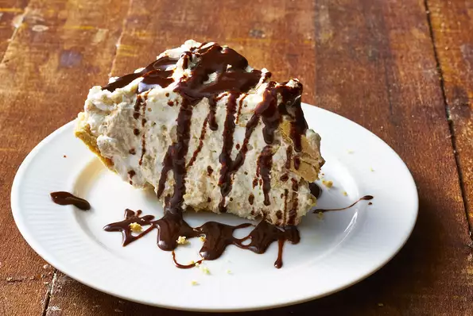

Peanut Butter Pie

Description
This pie has a light peanut butter taste and is visually pleasing.
It is very easy to put together. You can make it the day before
you need it because it keeps so well.
Ingredients
- 1 (9 inch) prepared graham cracker crust
- 1 cup heavy whipping cream
- 1 (10 ounce) package peanut butter chips
- 2 ounces smooth peanut butter
- 2 teaspoons vanilla extract
- 2 cups heavy whipping cream
- ¼ cup white sugar
- ½ cup chocolate syrup
Steps
- Place 1 cup of cream in a small saucepan. Heat to just below the boiling point. Place
peanut butter chips, peanut butter, and vanilla extract in food processor. With
processor running, slowly drizzle hot cream down pouring chute. Process until
mixture is completely smooth. Set aside to cool.
- In a large bowl, whip cream until soft mounds form. Slowly add sugar while
continuing to beat, until cream forms stiff peaks. Gently fold in cooled peanut
butter mixture. Do not incorporate completely; leave some white streaks in mixture.
- Pour mixture into graham cracker crust and chill at least 6 hours. Drizzle each plate
with chocolate syrup before serving.